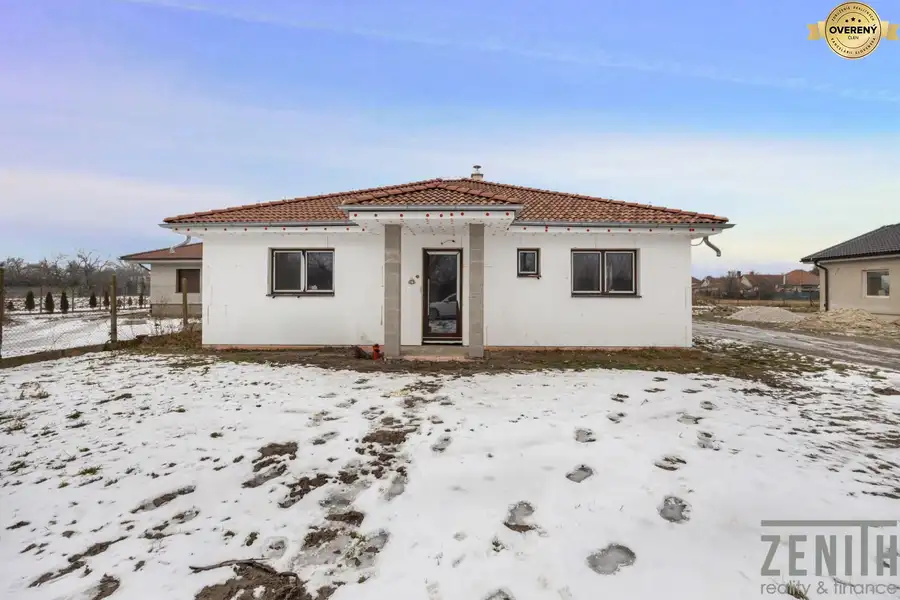
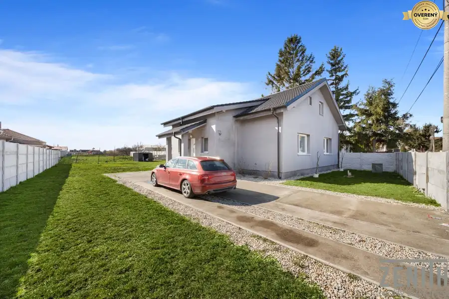
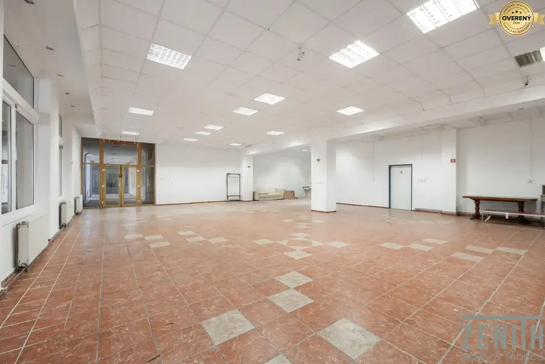

Na predaj – lesný pozemok priamo na brehu Malého Dunaja
Trstice
- Plocha1300 m²
- Poschodie0.
O nehnuteľnosti
Hľadáte miesto pre oddych v prírode, rybárčenie alebo investíciu do jedinečných pozemkov pri vode?
Ponúkame Vám exkluzívne na predaj lesné pozemky o výmere 1300 m², situovaný priamo na brehu Malého Dunaja, v nádhernom prostredí lužných lesov.
Výhody pozemku:
Priamy prístup k vode – vlastný breh Malého Dunaja
Možnosť vybudovania súkromného móla
Ideálne miesto pre rybárov, milovníkov prírody a rekreácie
Nachádza sa v tichom prírodnom prostredí lužných lesov
Potenciál na rekreačné využitie podľa možností územia
Možnosť legálnej ťažby dreva
Výborný pomer ceny a unikátnej lokality
Lokalita:
Pozemok sa nachádza v pokojnej prírodnej oblasti, pričom obec s kompletnou občianskou vybavenosťou je v dostupnej vzdialenosti.
Posledné dve fotky sú vizualizácia.
Parametre
| Rozloha pozemku | 1300 m² |
|---|---|
| Poschodie | prízemie |
| Terén | mierny svah |
| Dátum zverejnenia | 10. 4. 2026 |
Kde to je
Mohlo by Vás zaujímať

Rodinné domy10 224 000 €Váš vysnívaný domov so záhradou – 4-izbová novostavba Horná Potôň 4-izbový102 m² Ponúkame na predaj novostavbu 4-izbového rodinného domu obci Horná Potôň v uzatvorenom areáli v blízkosti Šamorína, predávanú v stave holodom s…
Rodinné domy10 199 000 €Rodinný dom s 2 bytovými jednotkami – Kútniky časť Blažov Kútniky 6-izbový164 m² Ponúkame na predaj priestranný rodinný dom s dvomi samostatnými bytovými jednotkami v pokojnej obytnej lokalite obce Kútniky – časť Blažov, iba 3 km…
Nebytové priestory10 350 000 €EXKLUZÍVNE NA PREDAJ – Obchodný priestor v centre Dunajskej Stredy Dunajská Streda 258 m² Ponúkame na predaj priestranný obchodný priestor, nachádzajúci sa vo výnimočnej lokalite priamo v centre mesta na **Námestí Ármina Vámbéryho**.…